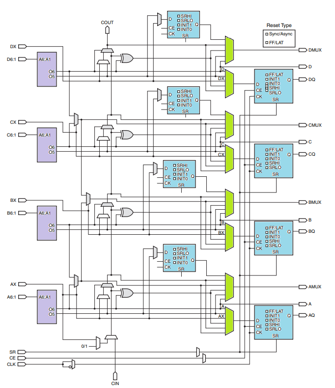
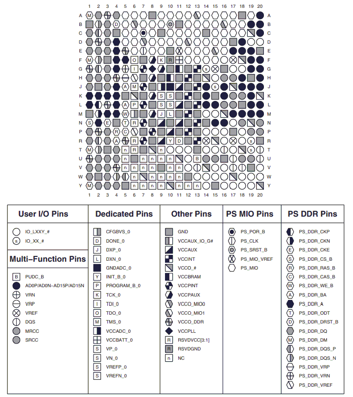
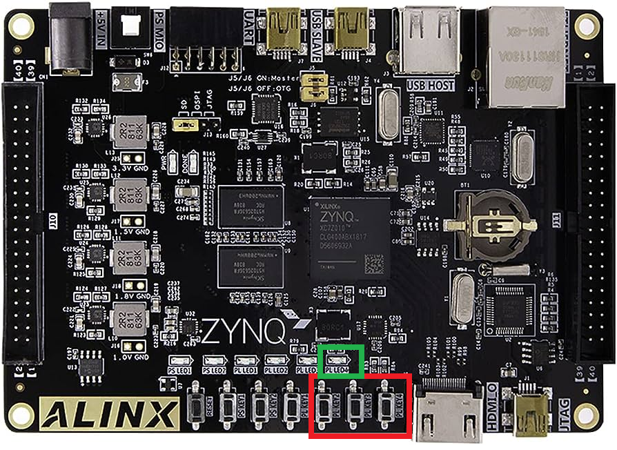
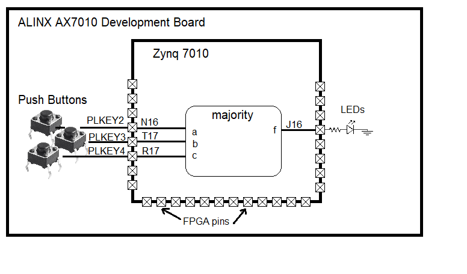

| Lecture | 9 |
| Code | |
| Class Objectives | Be able to write a constraint file given an entity description and the AX7010 schematic. |
FPGA Fabric
Up to now you have learned and practiced simulating a digital circuit. This is an important first step in the deployment of your digital circuit inside a FPGA, a processed called synthesis. The software used must convert your VHDL file into something that maps onto the internal structure of the FPGA.The Xilinx FPGA has an array of configurable logic block (CLB) that are interconnected by a configurable interconnection network that enables signals to travel between CLBs. Yo could think of the CLBs as small panels of fabric and the interconnection network as threads that connect adjacent CLBs. From this analogy comes the term "FPGA Fabric".
The following figure shows the logical elements that make up one CLB.
- purple = 5-input, 2-output look up tables (LUTs). The LUT is just random access memory with 5-bits of address, with a 2-bit word.
- blue = D flip flops
- green = multiplexers

LUT utilization
The LUTs are used to store combinational logic, things that can be described with truth tables. As an example, let's say you wanted to synthesize the majority circuit discussed in the first couple lectures into the FPGA fabric. The truth table for the majority circuit looks like:a b c | f ------|-- 0 0 0 | 0 0 0 1 | 0 0 1 0 | 0 0 1 1 | 1 1 0 0 | 0 1 0 1 | 1 1 1 0 | 1 1 1 1 | 1
The synthesis software would store the bits 0, 0, 0, 1, 0, 1, 1, 1 in the first 8 memory locations of the LUT and wire the least significant 3 address lines to the variables a, b, c. The most significant 2 address lines would be hard-wired to "00", so only the lower 8 words would be accessible.
How can you realize a function with more than 5-inputs? Use multiple LUTs and then combine their outputs. For example, let's say you have a 6-input function F(a,b,c,d,e,g) that you want to store. The truth table for this function will have 26=64 rows. Store the first 32 rows in the A LUT and the last 32 rows in the B LUT. Send the inputs b,c,d,e,g into the address lines of A and B LUTs. The output from these two LUTs will leave the CLB through the AMUX and BMUX outputs. Configure the interconnection network to run these two outputs into a third LUT with a, AMUX and BMUX as the address bits. This third LUT acts like a multiplexer with the a input acting like the select and the AMUX and BMUX values as y1 and y0. I've put the truth table below for reference.
a AMUX BMUX | F ------------|-- 0 0 0 | 0 0 0 1 | 0 0 1 0 | 1 0 1 1 | 1 1 0 0 | 0 1 0 1 | 1 1 1 0 | 0 1 1 1 | 1
Neat :)
Pinout
We are using the Xilinx Zynq 7010 chip. This ball grid array (BGA) chip has 400 pins. Like most chips, some pins have dedicated purposes, like power, clocks, and access to external DDR RAM. The complete list of pin Zynq 7010 CLG 400 The pins that you will want to focus on are those labeled "HR" in the "I/O Type" column. These pins all have labels in the "Pin Name" column like "IO_L19N", abbreviated to "N15" in the "Pin" column. The abbreviation "R17" means that the pin is in row R and column 17 in the following diagram (page 33 in UG865).
ALINX AX7010 Schematic
Let's return to our example of the majority circuit. Say I asked you to connect the a,b,c inputs to three of the push buttons on the ALINX board shown outlined in red and output the result on the LED outlined in green.
Notice, if you can, the silk screen the names for these button and LED.
- PLKEY2
- PLKEY3
- PLKEY4
- PLLED4
- Relate your entity to the devices on the AX7010 board
- Look at the AX7010 silk screen and identify the names of the devices.
- Open the AX7010 schematic and search for the silk screen names.
- Verify the names match the component that you are looking at on the board.
- Look for the silk screen name on Bank 34 or 35 on page 5 of the schematic.
- Find the corresponding pin name.

From the images above, you can see that PLKEY4 is connected to pin R17. If you have been following the discussion, we wanted to associate the c input with PLKEY4 and by association pin R17. This association between the c input and pin R17 is captured in the .XDC file.
XDC file
We now come to the apple pie. You will create a Xilinx Design Constraint (XDC) file that contains the association between the signals of the entity and the pins of the FPGA. For example, the person who designed the ALINX AX7010 board made a decision to run the PLKEY4 push buttons to pin R17. We want that push button to be associated with the c input of the majority circuit. The remaining associations between the signal of the majority entity and the pins of the Zynq 7010 FPGA are shown in the following image.
This interface between the FPGA pins and entity signals is captured in the following XDC file. Each signal in the entity has two rows, one defining the pin associated with the signal and the second defining the logic type of the signal.
set_property PACKAGE_PIN N16 [get_ports a] set_property IOSTANDARD LVCMOS33 [get_ports a] set_property PACKAGE_PIN T17 [get_ports b] set_property IOSTANDARD LVCMOS33 [get_ports b] set_property PACKAGE_PIN R17 [get_ports c] set_property IOSTANDARD LVCMOS33 [get_ports c] set_property PACKAGE_PIN J16 [get_ports f] set_property IOSTANDARD LVCMOS33 [get_ports f]A question that might pop-up is, "How to handle signals that have a STD_LOGIC_VECTOR type"? All you have to is to assign each bit in the vector to its own pin and use square brackets to index the bits of the vector. For example say that we had an entity with data: in STD_LOGIC_VECTOR(7 downto 0); You would have the following lines in your XDC file.
set_property PACKAGE_PIN U17 [get_ports data[7]] set_property IOSTANDARD LVCMOS33 [get_ports data[7]] ... set_property PACKAGE_PIN T17 [get_ports data[0]] set_property IOSTANDARD LVCMOS33 [get_ports data[0]]In this example, the pins U17 and T17 would have to be some hardware device that was capable of accepting 8-bit values. We will explore such devices in later labs.